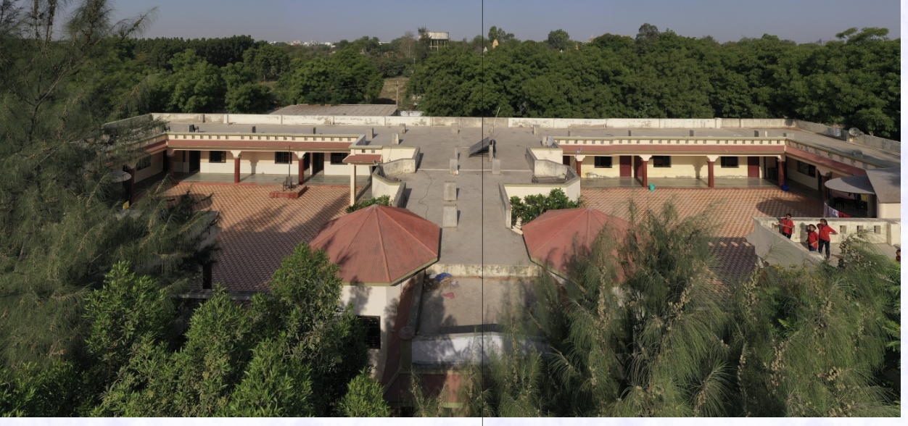
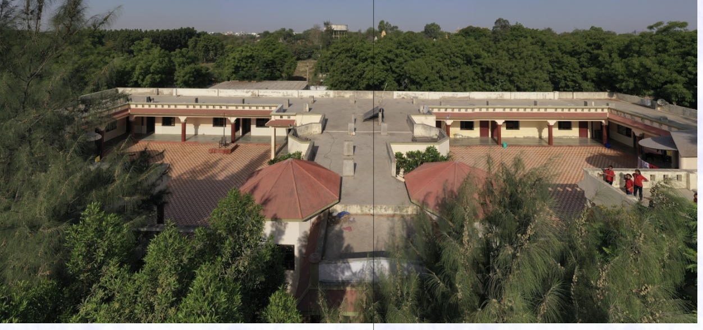

Manav Seva
Trust
Trust
 



Empowering orphaned and vulnerable children since 2000
Founded by Dr. Nimaben Acharya and Dr. Bhavesh Acharya after the tragic 2001 Kutch earthquake, Manav Seva Trust was established to provide a safe and nurturing home for orphaned and vulnerable children. Our center—Adhar Sankul Balashram—located in Gandhidham, is now home to 85+ children, offering them food, shelter, education, medical care, and a path to a brighter future.
We believe that every child deserves love, respect, and opportunity. With immense community support, we've built a haven where festivals are celebrated, talents are nurtured, and hope is alive.
“Visiting Adhar Sankul brought tears to my eyes. The joy these children radiate is heartwarming.”
“I celebrated my birthday here and it was the most fulfilling experience of my life.”
Be the reason a child smiles. Every act of kindness counts.
Email: manavsevatrust.gdm@gmail.com | Phone: +91 9879016263
Address: Manav Seva Trust , opp shiv temple
Galpadar district jail road , behind Rajvi Resort Galpadar
Gandhdiham(370201) Kutch